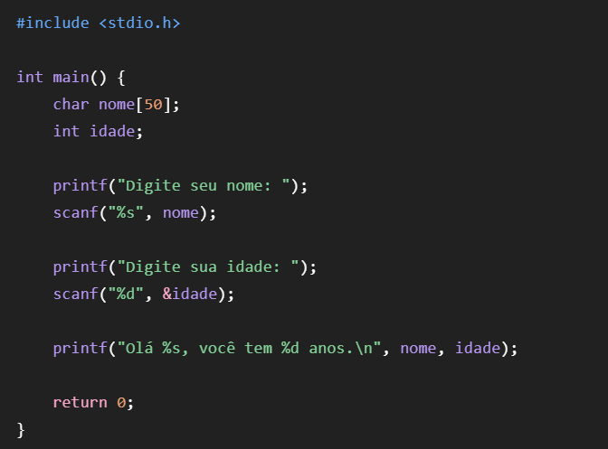
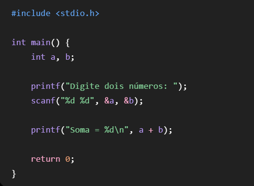
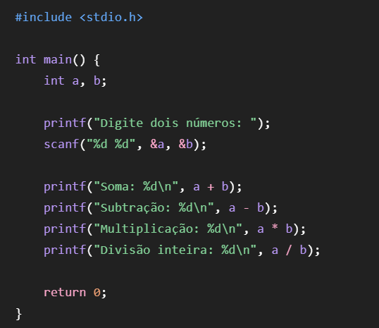
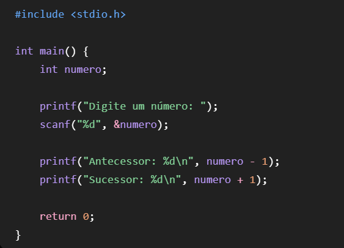
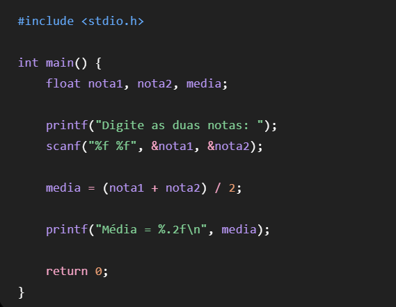
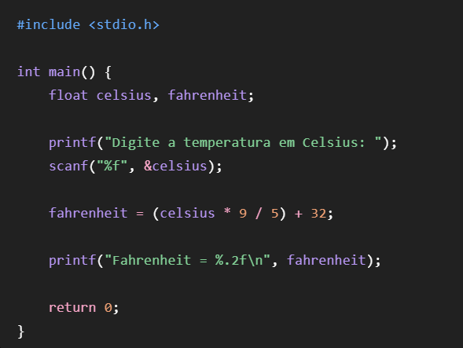
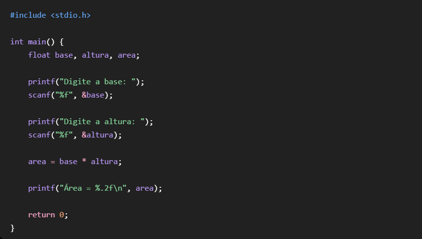
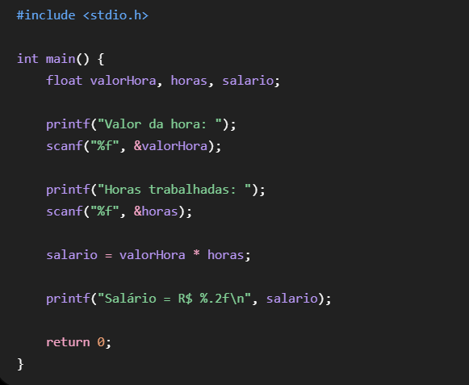
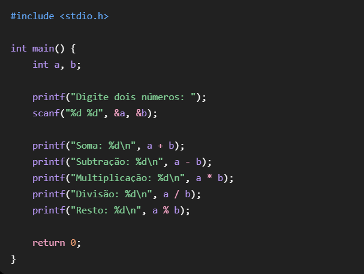
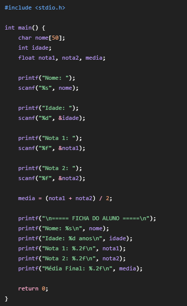

Crie um programa que exiba: Olá, Mundo! Bem-vindo à programação em C.

Primeiro, o programa inclui a biblioteca stdio.h, que permite utilizar o comando printf. Depois, dentro da função principal main, são utilizadas duas funções printf para mostrar as mensagens solicitadas na tela. O \n serve para pular uma linha. Por fim, return 0 indica que o programa foi executado corretamente.
Solicite o nome e a idade do usuário e exiba uma mensagem de apresentação.

O programa cria uma variável chamada nome para armazenar o nome do usuário e uma variável chamada idade para armazenar sua idade. O comando scanf permite que o usuário digite essas informações. Depois, o printf mostra uma mensagem utilizando os dados que foram digitados.
Leia dois números inteiros e exiba a soma.

O programa cria duas variáveis inteiras para armazenar os números. Em seguida, o usuário informa os dois valores e eles são armazenados nas variáveis a e b. Depois, o programa realiza a soma utilizando a + b e mostra o resultado na tela.
Leia dois números e mostre soma, subtração, multiplicação e divisão inteira.

O programa recebe dois números inteiros e realiza quatro operações matemáticas com eles. O sinal + realiza a soma, o - realiza a subtração, o * realiza a multiplicação e o / realiza a divisão inteira. Como as variáveis são do tipo int, a divisão não apresenta casas decimais.
Leia um número inteiro e mostre seu antecessor e sucessor.

O programa recebe um número inteiro informado pelo usuário. Para encontrar o antecessor, basta diminuir 1 do número. Para encontrar o sucessor, basta aumentar 1. Os dois resultados são mostrados na tela.
Leia duas notas (float) e calcule a média.

O programa utiliza variáveis do tipo float, pois as notas podem possuir casas decimais. O usuário informa duas notas e o programa soma os dois valores e divide o resultado por 2. Dessa forma, é encontrada a média das notas. O %.2f faz com que a média seja exibida com duas casas decimais.
Leia uma temperatura em Celsius e converta usando F=(C*9/5)+32.

O programa recebe uma temperatura em Celsius e utiliza a fórmula fornecida na atividade para convertê-la para Fahrenheit. Primeiro, o valor em Celsius é multiplicado por 9 e dividido por 5. Depois, 32 é somado ao resultado. A temperatura convertida é armazenada na variável fahrenheit e exibida na tela.
Leia base e altura e calcule a área.

O programa recebe uma temperatura em Celsius e utiliza a fórmula fornecida na atividade para convertê-la para Fahrenheit. Primeiro, o valor em Celsius é multiplicado por 9 e dividido por 5. Depois, 32 é somado ao resultado. A temperatura convertida é armazenada na variável fahrenheit e exibida na tela.
Leia valor da hora e quantidade de horas trabalhadas. Calcule o salário.

O programa solicita quanto o trabalhador recebe por hora e quantas horas ele trabalhou. Depois, multiplica o valor da hora pela quantidade de horas trabalhadas. O resultado representa o salário e é mostrado em reais com duas casas decimais.
Leia dois números e mostre soma, subtração, multiplicação, divisão e resto da divisão.

O programa funciona como uma calculadora simples. Ele recebe dois números e realiza soma, subtração, multiplicação e divisão. Além dessas operações, utiliza o símbolo %, que mostra o resto da divisão inteira. Por exemplo, quando dividimos 10 por 3, o resultado inteiro é 3 e o resto é 1.
Solicite nome, idade, nota 1 e nota 2. Exiba uma ficha do aluno contendo os dados e a média final.

O programa solicita o nome, a idade e duas notas do aluno. Depois que todas as informações são digitadas, o programa calcula a média das duas notas. Por fim, ele organiza e exibe todas as informações em formato de uma ficha, mostrando o nome, a idade, as notas e a média final do aluno.